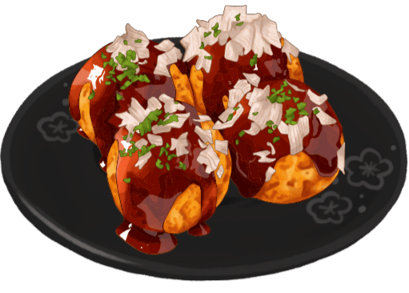
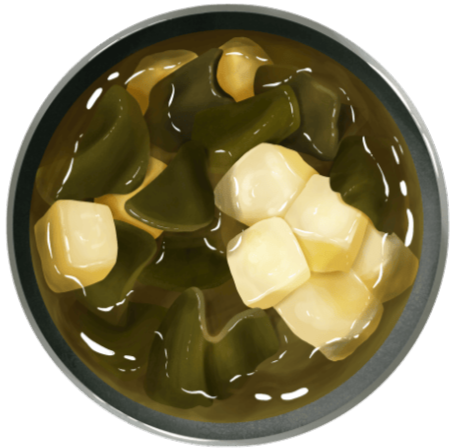 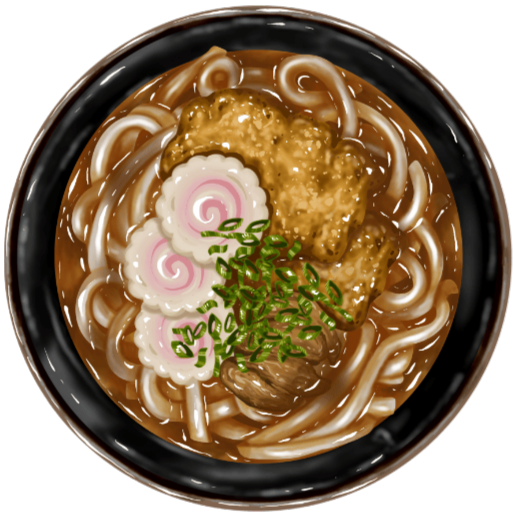 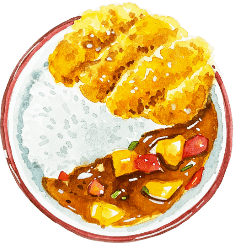 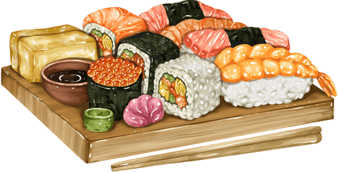 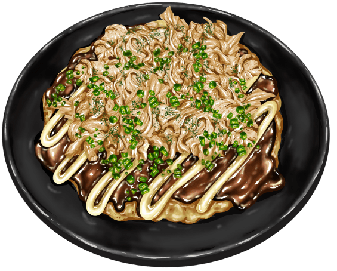 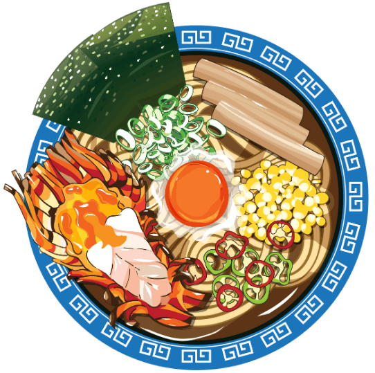
Gastronomie
Udon & Soba (うどん・そば)
Udon : nouilles épaisses à base de farine de blé.
Soba : nouilles fines à base de sarrasin.
Servies chaudes ou froides selon la saison, accompagnées de sauce soja, tempura ou oignons verts.
 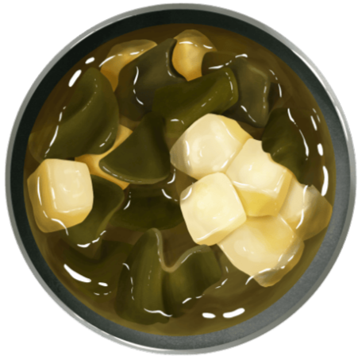
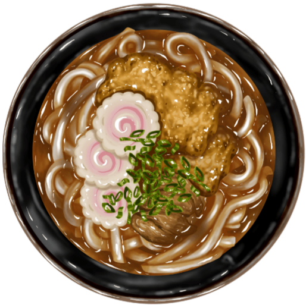
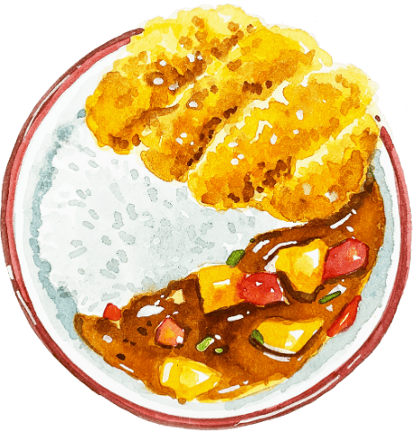
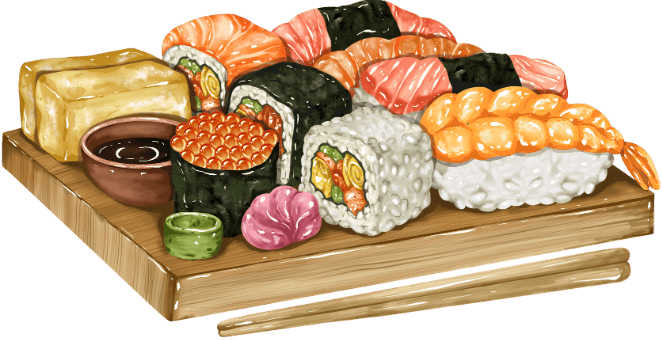
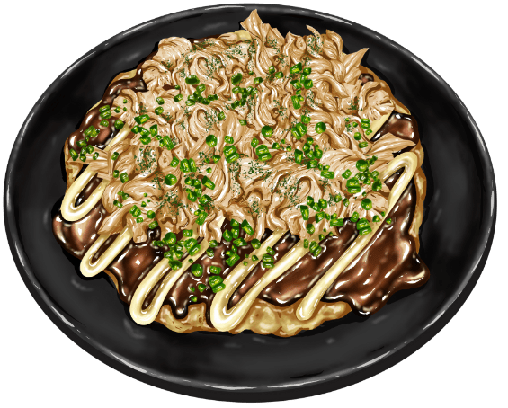
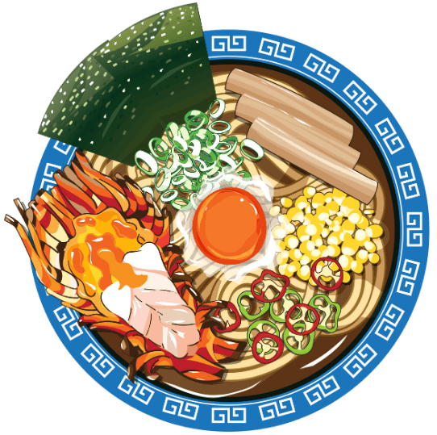
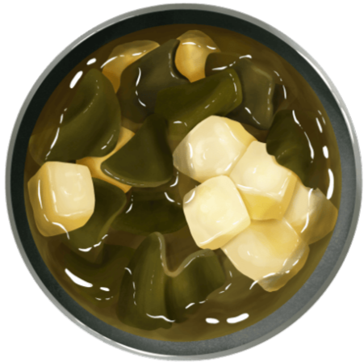
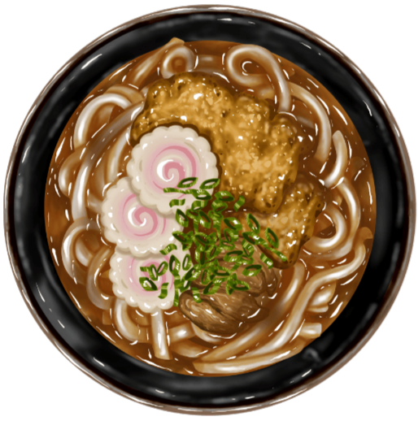
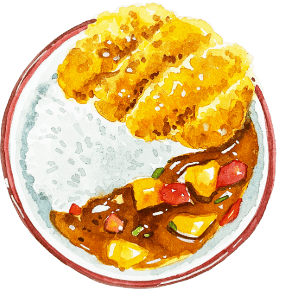
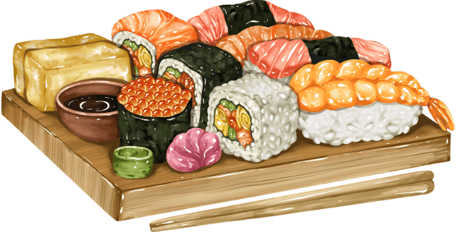
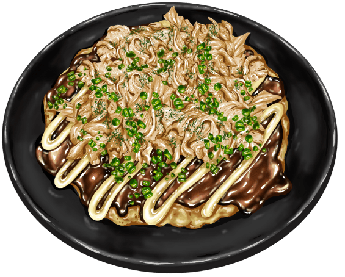
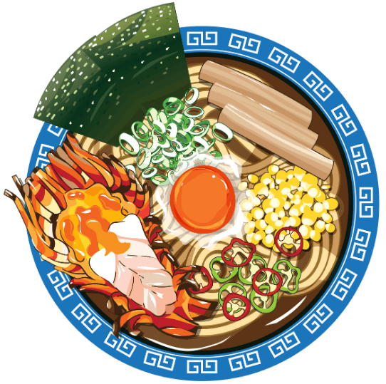
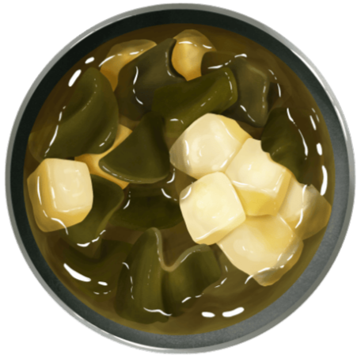
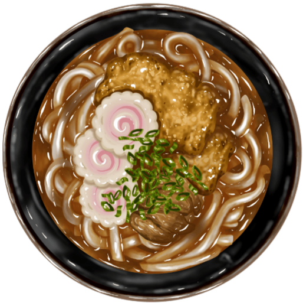
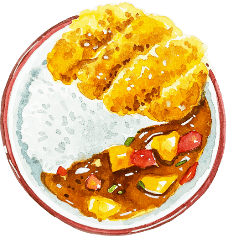
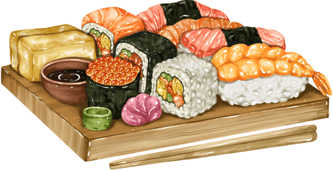
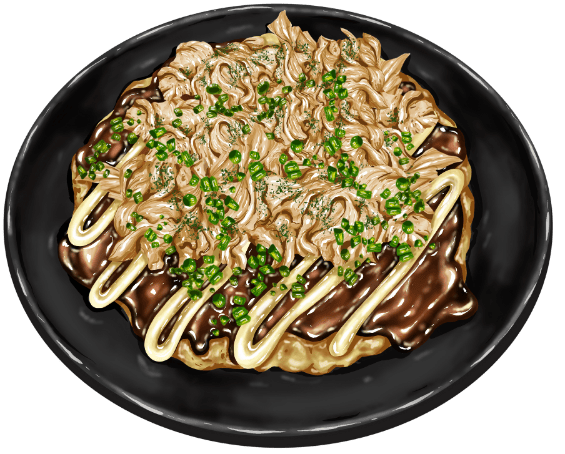
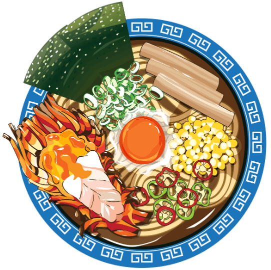
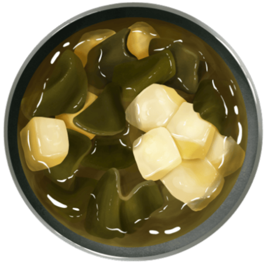
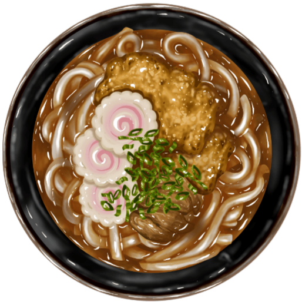
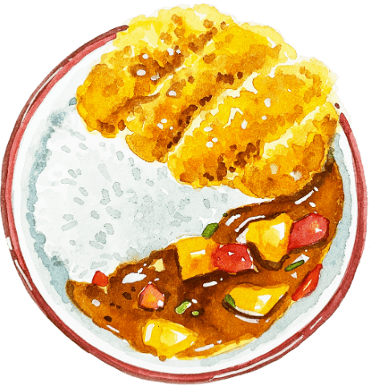
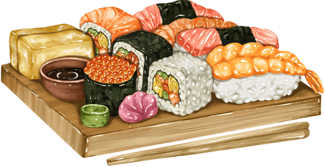
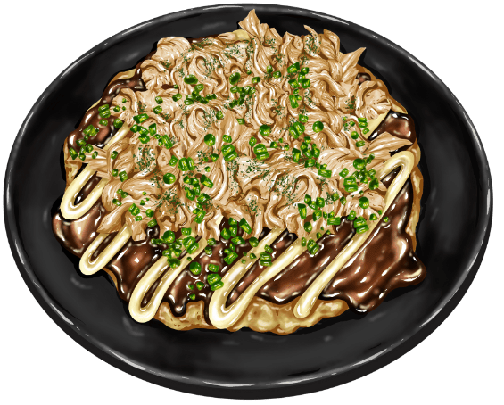
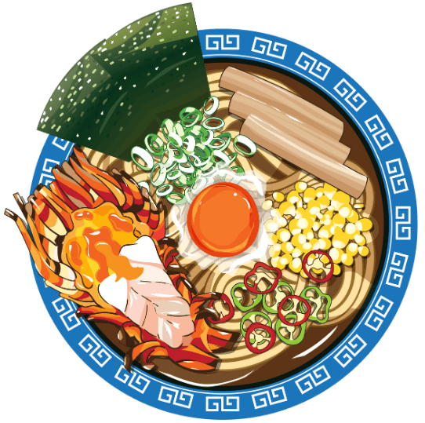